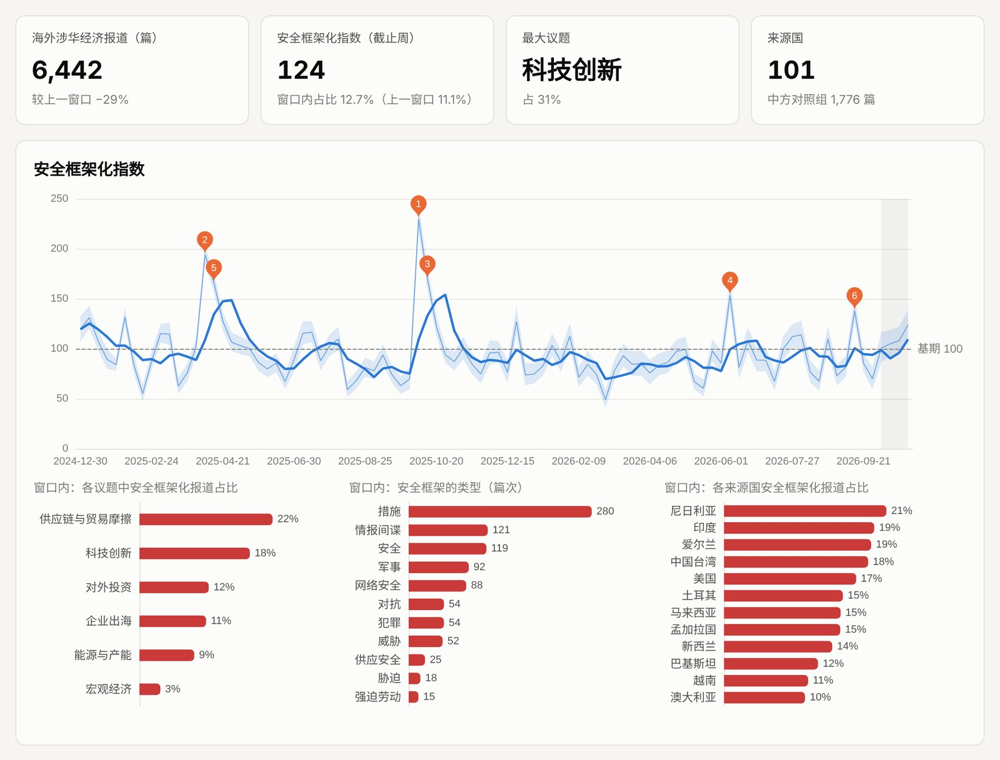

运行中 · v1.0 · 每周一更新
全球涉华经济舆情监测及经济安全化指数
每周自动更新的全球英文涉华经济报道监测：议题、国别、叙事与安全框架化指数。
- 数据：GDELT 全球知识图谱。2019 年第四季度以来逐周的海外涉华经济报道标题库，另有基于 URL 的长期序列回溯至 2015 年。
- 测量：以 Baele & Sterck 安全化词表为起点、经样本外验证的标题编码规则，构建安全框架化指数，附 95% 置信区间、话语/措施分项与稳健性检验。
- 功能：基于语义聚类的周/季/年议题榜、国别议程对比（加权对数几率）、四层共 36 个叙事追踪。
- 运行：每周一自动取数、计算、发布；方法、编码手册与验证结果全部公开。